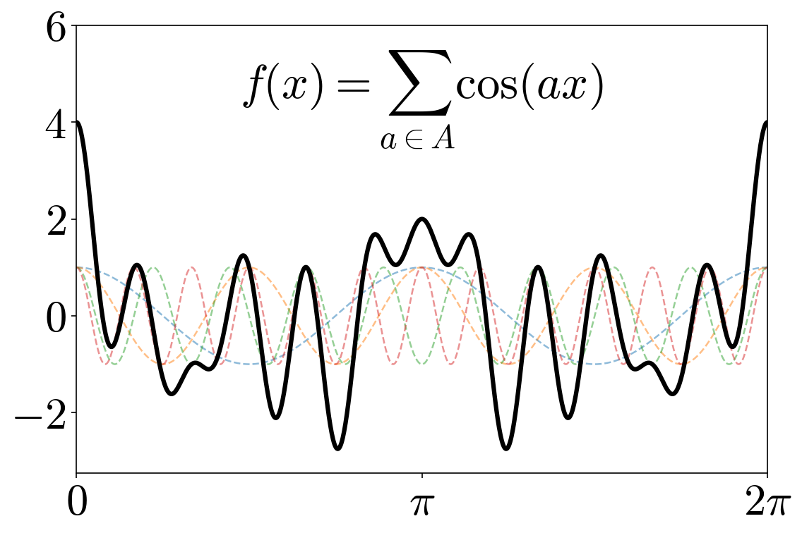

Hi! I’m a third-year PhD student at ETH Zurich, advised by Benny Sudakov. I earned my bachelor’s degree in Mathematics at Princeton University.
My research focuses on combinatorics, with occasional excursions into discrete geometry. I am especially interested in extremal and probabilistic combinatorics, Ramsey theory, and incidence geometry.
